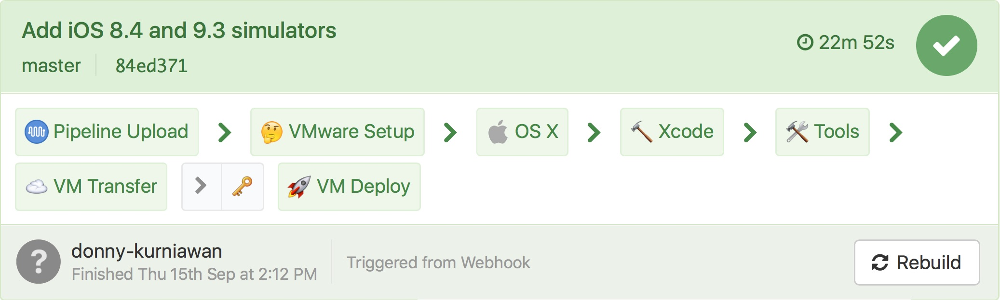
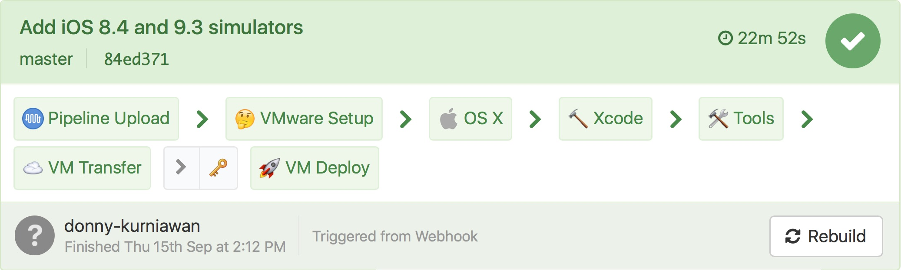

Automating iOS CI Infrastructure
at REA Group
Donny Kurniawan ✨ @donny_k_
realestate.com.au

🇦🇺🇮🇹🇲🇾ğŸ‡ğŸ‡°ğŸ‡®ğŸ‡©ğŸ‡¸ğŸ‡¬ğŸ‡±ğŸ‡ºğŸ‡«ğŸ‡·ğŸ‡©ğŸ‡ªğŸ‡¨ğŸ‡³ğŸ‡¹ğŸ‡ğŸ‡µğŸ‡ğŸ‡ºğŸ‡¸ğŸ‡²ğŸ‡´

📱 âŒšï¸ ❤️ 🇦🇺 🏡


Agenda
Continuous Integration ♻️
Previous CI Infrastructure 🚗
Problems & Issues 🔥
Requirements & Workflow ğŸ›
Present CI Infrastructure 🚀
Continuous Integration ♻️
... a practice that requires developers
to integrate code into a shared repository.
Each check-in is then verified by an automated build.
Benefits
Previous CI Infrastructure 🚗
👻
Issues

🶠ğŸ±
📢
Requirements & Workflow ğŸ›
The REA iOS Team
is expanding
The REA iOS Team
is expanding
The REA iOS Team
is expanding
🖠ğŸ„
Automate All Things
Code templates
rather than
wiki pages
Scalable
Automated
Templated


Dynamic Pipeline


🍎 🖥 🍎
osx-vm-factory
 


Copy the final disk image to machines
Based on machines.json file
Machines are in the same private subnet

Login to machines and setup necessary files
Destroy previous VMs and clean up
Restart VMs with new disk image
config.json
{
"provider": "vmware",
"secret_file": "/Users/macmini/Documents/REA/secret.json",
"box_folder": "/Users/macmini/Documents/REA/Box",
"xcode_version": "8",
"xcode_simulators": "iOS 8.4_iOS 9.3",
"xcode_folder": "/Users/macmini/Downloads/Xcode/",
}
machines.json
{
"machines": [
{
"user_host": "macpro@127.0.0.1",
"box_folder": "Documents/REA/Box/",
"deploy_folder": "Documents/REA/VM/",
"nodes": [
{
"hostname": "macpro-1", "cpus": "4", "memory": "8192",
"buildkite_name": "aap-ios-%hostname",
"buildkite_metadata": "queue=aap-ios:resi-mobile-ios:build,xcode=8"
},
{
"hostname": "macpro-2", "cpus": "4", "memory": "8192",
"buildkite_name": "aap-ios-%hostname",
"buildkite_metadata": "queue=aap-ios:resi-mobile-ios:build,xcode=8"
}
]
}
]
}
🖠ğŸ„